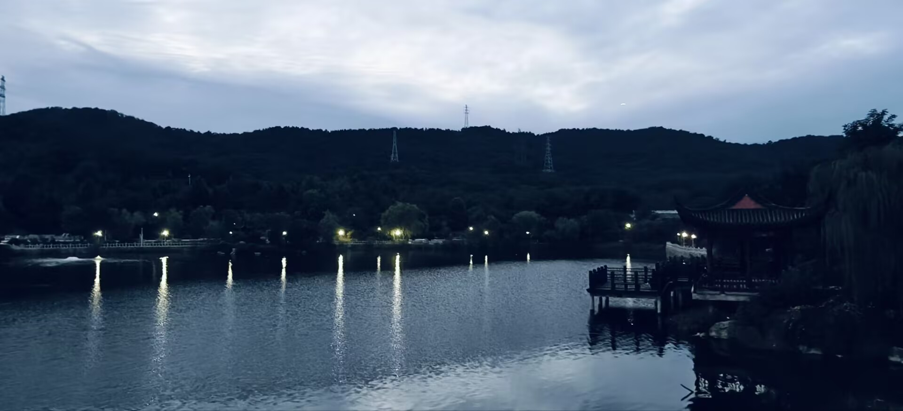
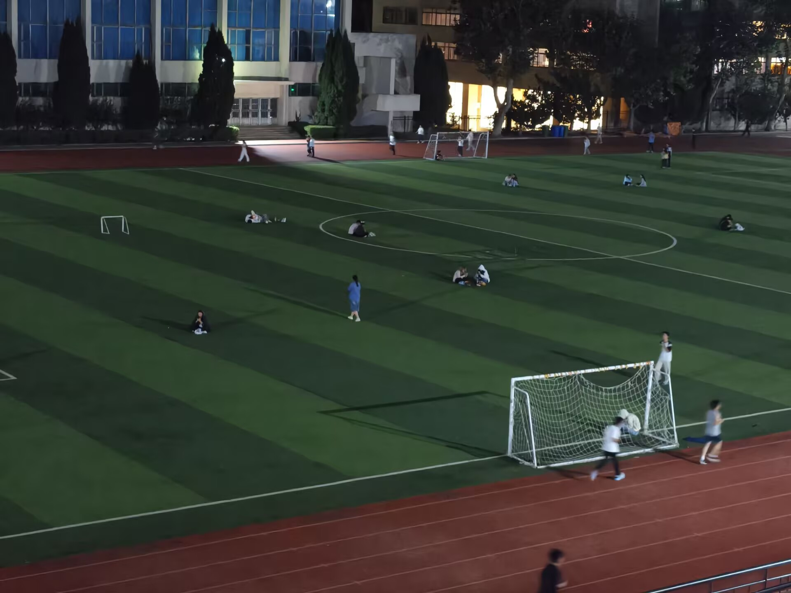
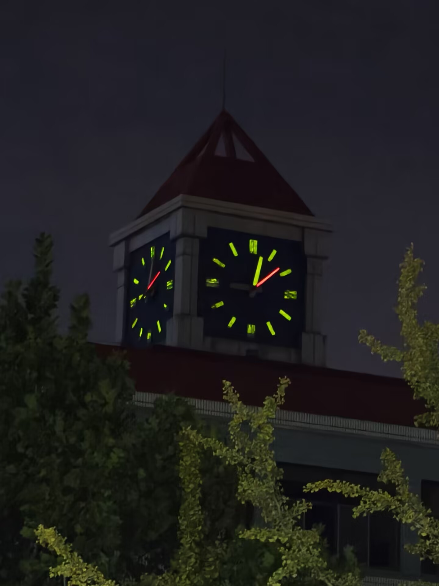
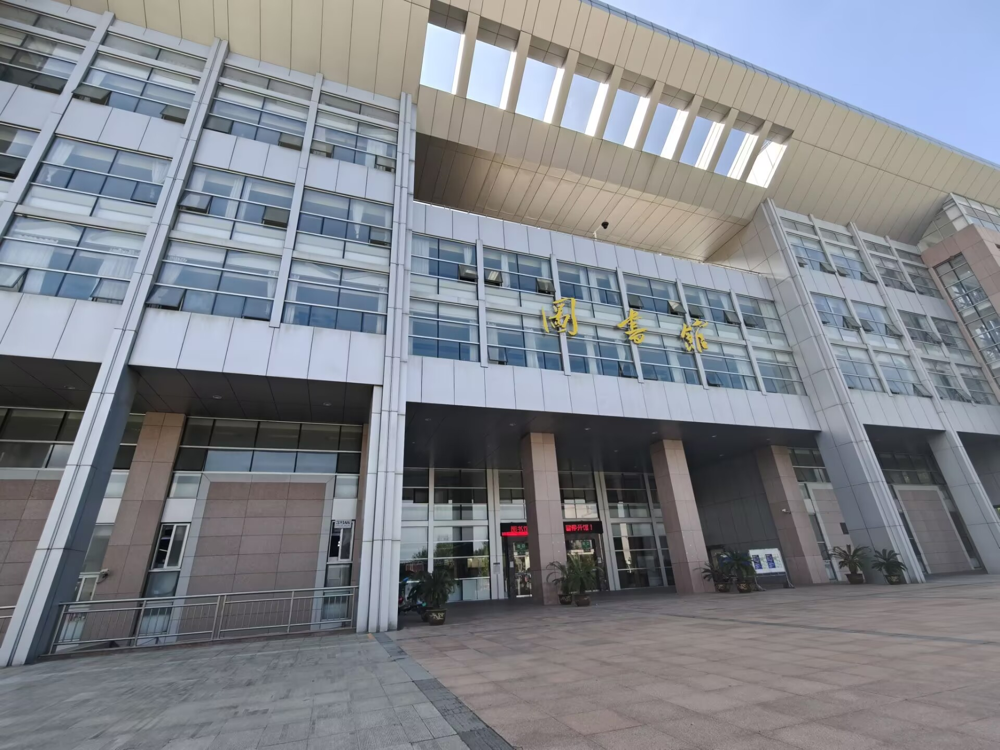

晨雾如半透明的蚕丝，缠绕在理科楼尖顶的避雷针上，尚未消散时，樱花大道已浮起连绵的粉白色云霭。那些重瓣的关山樱攒成蓬松的团簇，缀满百年香樟交错的枝桠，风掠过树梢的刹那，花瓣便簌簌抖落成一场温柔的雪。石阶渐渐覆了层湿漉漉的绡纱，昨夜雨珠在凹痕里积成小小的镜面，倒映着匆匆掠过的球鞋与裙裾。穿行其间的学子们肩头停驻着飘落的花瓣，像被春天亲手别上的勋章，衣角携着青草汁液与泥土的清冽气息——那是蚯蚓在苏醒的土层下翻动大地的证明。 图书馆的玻璃幕墙将整条花径折叠成流动的画卷：一树垂枝樱斜探向窗内，花瓣的淡影在《时间简史》的书页上轻轻摇曳。忽有灰喜鹊从檐角俯冲而下，翅尖扫落的水珠坠入湖面，惊起圈圈涟漪。物理系的白发教授驻足湖畔，望着被波纹揉碎的云影低语：“看啊，这是春天在解微分方程。”
镜湖是春天失手打翻的调色盘。垂柳新抽的嫩芽浸透雨水，将千万条绿丝绦垂向碧波，宛如少女对镜梳洗的长发。白玉兰在湖心亭畔擎起瓷盏般的花苞，当午后的阳光穿透花瓣，地面便浮动着半透明的光斑，仿佛遗落的月影。黑天鹅家族拨开浮萍巡游，幼雏绒毛未褪的脖颈在涟漪中划出银亮的绸带，引得写生的艺术生们速写本上沙沙作响，炭笔与柳枝的影子在纸面交织成诗。 长椅旁的山茶开得炽烈如焚，绛红花瓣跌进摊开的《飞鸟集》，被哲学系的长发女生轻轻拈起，压成时间的标本。风过林梢时，柳絮与蒲公英结伴飞旋，穿过篮球少年跃起扣篮的弧线，掠过网球场金线交织的围网，最终停驻在生物实验室窗台的培养皿边——那里面正萌发着豌豆新绿的胚芽。暮色渐浓时，紫藤回廊垂下串串花穗，晚自习的灯火次第亮起，像大地向星空递出的春之信笺。